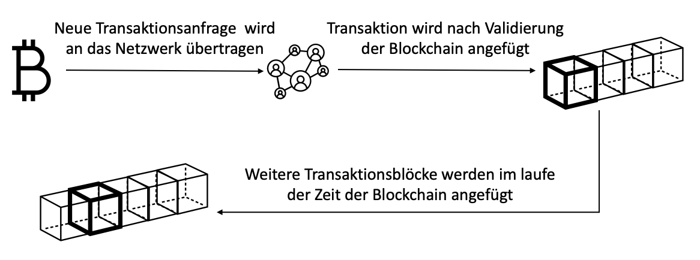

Die Blockchain ist die Basis der meisten Kryptowährungen. Dabei handelt es sich um eine Art verteilte, öffentliche Datenbank, die genutzt wird, um Transaktionen unveränderbar zu archivieren. Man kann sich eine Blockchain wie eine Art Kette vorstellen, die regelmäßig um ein weiteres Glied verlängert wird. So ein Glied wird “Block” genannt und speichert eine gewisse Anzahl an Transaktionen, die zwischenzeitlich in Auftrag gegeben wurden. Es handelt sich also um eine Kette von Blöcken, die Transaktionsinformationen enthält.
Sobald ein Nutzer eine Transaktion tätigt, wird eine Transaktion Anfrage zur Validierung an die Nodes des Peer-to-Peer Netzwerk gesendet. Der Validierungsprozess verläuft bei verschiedenen Kryptowährungen unterschiedlich, dies wird unter „Konsens“ noch näher erläutert. Nach der Validierung wird die Transaktion mit weiteren Transaktionen zu einem Datenblock zusammengefasst und dieser Block wird zur Blockchain hinzugefügt. Im Optimalfall ist die Transaktion nun endgültig. Im weiteren Verlauf werden immer neue Transaktions-Blöcke an die Blockchain angefügt und die Kette wächst immer weiter. Jede Node im Netzwerk erhält eine Kopie der Blockchain, dadurch ist jede Transaktion dokumentiert und kann im Nachhinein nicht mehr verändert werden.
Eine Blockchain bietet also die folgenden Eigenschaften:
Bei der Transaktion einer Kryptowährung fallen immer Transaktionsgebühren an. Der Grund dafür ist, einen Anreiz für die Netzwerkteilnehmer zu schaffen, sich an der Erzeugung der Blöcke zu beteiligen. Denn die Transaktionsgebühren sind Bestandteil der Belohnung, die die Validatoren für ihren Aufwand erhalten. Die Höhe der Transaktionsgebühren variiert zwischen den verschiedenen Kryptowährungen. Unter Cryptofees.net ist eine Auflistung an kürzlich aufgegebenen Transaktionen verschiedener Währungen zu finden, die die Höhe der Transaktion und die Höhe der Transaktionskosten in USD darstellt.
Die Transaktionsgebühr legt der Überweisende selbst fest. Hier ist es jedoch wichtig zu beachten, dass die Transaktionen in einem Pool landen, bevor sie validiert und einem Block hinzugefügt werden. Die Validatoren wählen dann in der Regel Transaktionen nach Gebührenhöhe aus, da diese ihre Belohnung darstellt. Bietet man also zu niedrige Gebühren, kann es sein dass die Transaktion für lange Zeit nicht validiert wird, da die Validatoren eine geringere Belohnung erhalten.